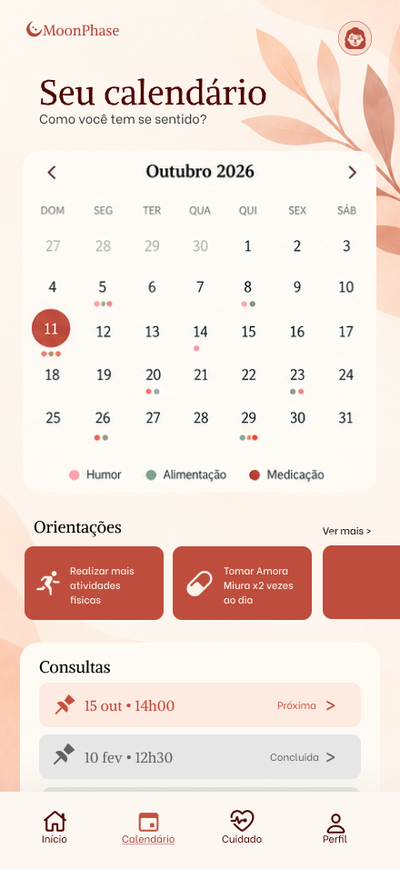

Um momento para você.
Registre como está se sentindo e organize informações da sua rotina, no seu tempo.
A menopausa faz parte da sua história. Você merece espaço para entender o que sente, organizar sua rotina e conversar com quem cuida de você.
A Moonphase está nascendo para aproximar esses momentos.
Em desenvolvimento. Construída com a sua participação.
Uma visão do seu dia a dia, para uma conversa com mais contexto.
Prévia do aplicativoNa hora da consulta, nem sempre é fácil lembrar como foram as últimas semanas. Nossa proposta é reunir seus registros em um só lugar, para ajudar você a contar sua história e o profissional a acompanhar sua trajetória.
Registre como está se sentindo e organize informações da sua rotina, no seu tempo.
Reveja seus registros no calendário e leve para a consulta aquilo que merece atenção.
Com sua autorização, a proposta é compartilhar esse contexto com o profissional que acompanha você.
Do registro de como você se sente às informações da próxima consulta. Conheça a experiência que estamos desenhando para você.
Registros e compromissos organizados para acompanhar sua rotina.
Um lugar para registrar sintomas, humor e informações do seu dia a dia.
Consultas, lembretes e orientações reunidos para facilitar a organização.
Toque nas telas para ampliar. Imagens do protótipo: recursos em desenvolvimento. Os exemplos exibidos não são recomendações de tratamento.
A experiência web foi pensada para reunir registros, consultas e o histórico relatado pela paciente. Mais informação para apoiar a conversa e a avaliação profissional.
Quero participar como profissional ↗Consulte o histórico relatado antes do atendimento.
Visualize a evolução das informações ao longo do tempo.
Uma proposta para aproximar rotina e acompanhamento.
Interface demonstrativa. Informações e pessoas exibidas fazem parte das telas fornecidas para apresentação do projeto.
O que faria diferença na sua rotina? Deixe seu interesse, compartilhe uma ideia e ajude a construir a Moonphase.
Participação gratuita e sem compromisso.Seu interesse foi registrado. Obrigada por ajudar a construir a Moonphase!
Ainda não. Estamos construindo e validando a proposta com pacientes e profissionais. As telas são prévias da experiência e os recursos podem mudar com o que aprendermos nessa etapa.
Não. A proposta é organizar registros e apoiar a conversa com o profissional. Avaliações, diagnósticos e decisões sobre tratamentos permanecem com os profissionais de saúde.
Selecione essa opção no formulário e conte o que faria diferença na sua prática. O cadastro manifesta seu interesse em conversar sobre o projeto e participar de um futuro piloto, ainda sem data definida.
Não há custo para manifestar interesse e você não assume compromisso de contratação. As condições de acesso ao futuro produto ainda estão em definição.
Ao enviar o formulário, você compartilha nome, e-mail, perfil, interesse e, se desejar, uma sugestão. Esses dados serão guardados em uma planilha de acesso restrito da equipe Moonphase, no Google Sheets, para organizar contatos e conhecer as ideias de quem participa.
Você pode usar a página e enviar o formulário sem permitir a medição. Não informe dados de saúde. O canal de contato para solicitações sobre os dados será informado antes da abertura dos cadastros.